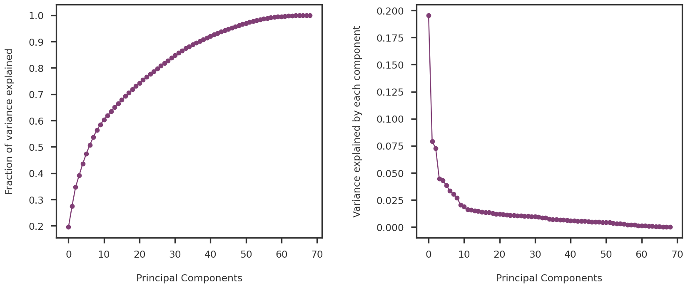
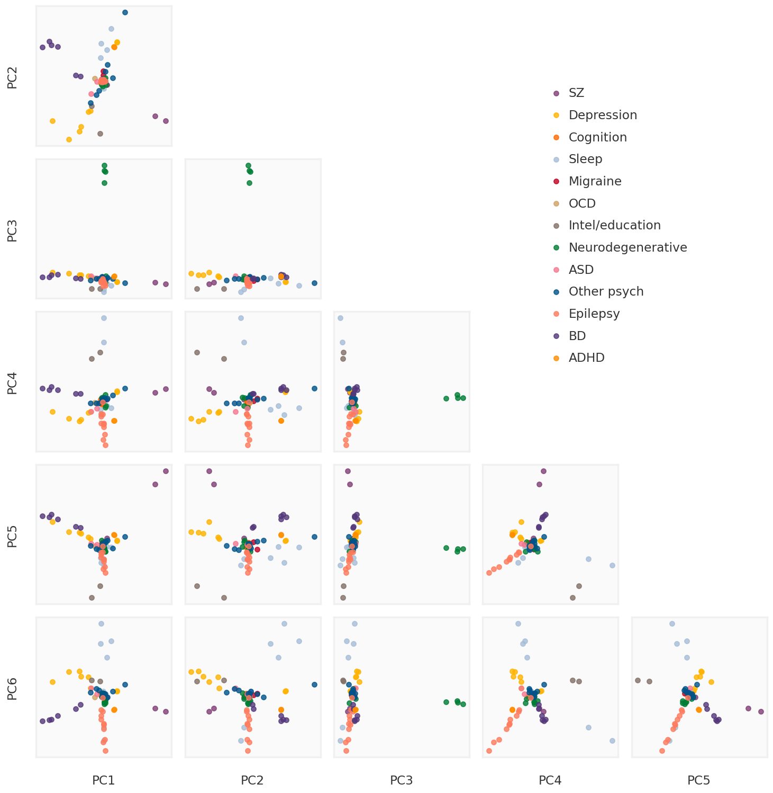
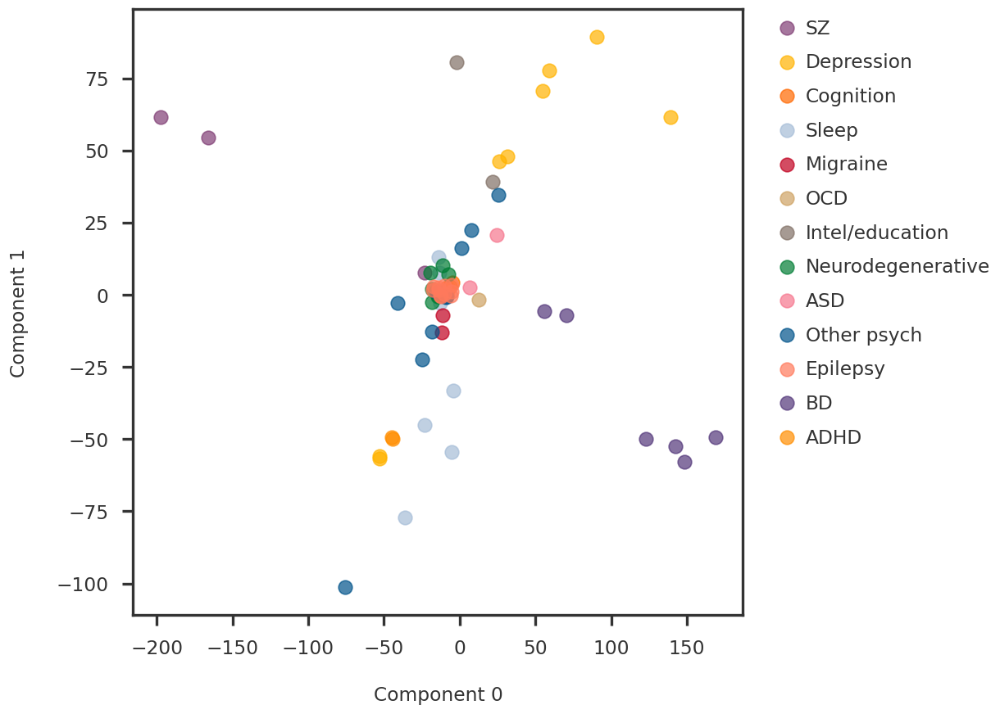

We apply PCA (and weighted PCA) on our input data and plot the principal components labeled with the broad phenotypes
About
For multi-trait analysis of GWAS summary statistics, we look at one of the simplest models - the principal component analysis (PCA). The goal is to characterize the latent components of genetic associations. We apply PCA to the matrix of summary statistics derived from GWAS across 80 NPD phenotypes from various sources – namely, GTEx, OpenGWAS and PGC. For a similar comprehensive study with the UK Biobank data, see Tanigawa et al., Nat. Comm. 2019.
The \mathbf{X} matrix of size N \times P for the PCA is characterized by N phenotypes (samples) and P variants (features).
Code
import numpy as npimport pandas as pdimport matplotlib.pyplot as pltfrom pymir import mpl_stylesheetfrom pymir import mpl_utilsfrom sklearn.decomposition import PCAmpl_stylesheet.banskt_presentation(splinecolor ='black', dpi =120, colors ='kelly')
X = np.array(zscore_df.replace(np.nan, 0)[select_ids]).Tcolmeans = np.mean(X, axis =0, keepdims =True)Xcent = X - colmeanslabels = [phenotype_dict[x] for x in select_ids]unique_labels =list(set(labels))print (f"We have {Xcent.shape[0]} samples (phenotypes) and {Xcent.shape[1]} features (variants)")
We have 69 samples (phenotypes) and 10068 features (variants)
The variance explained by each principal component is shown in Figure 1
Code
fig = plt.figure(figsize = (14, 6))ax1 = fig.add_subplot(121)ax2 = fig.add_subplot(122)#ax1.scatter(np.arange(ncomp), pca.explained_variance_ratio_, s = 100, alpha = 0.7)ax1.plot(np.arange(ncomp), np.cumsum(pca.explained_variance_ratio_), marker ='o')ax1.set_ylabel("Fraction of variance explained")ax1.set_xlabel("Principal Components")ax2.plot(np.arange(ncomp), pca.explained_variance_ratio_, marker ='o')ax2.set_ylabel("Variance explained by each component")ax2.set_xlabel("Principal Components")plt.tight_layout(w_pad =3)plt.show()

Figure 1: Variance explained by the Principal Components
We plot the first 6 principal components against each other in Figure 2. Each dot is a sample (phenotype) colored by their broad label of NPD.
Code
plot_ncomp =6subplot_h =2.0nrow = plot_ncomp -1ncol = plot_ncomp -1figw = ncol * subplot_h + (ncol -1) *0.3+1.2figh = nrow * subplot_h + (nrow -1) *0.3+1.5bgcolor ='#F0F0F0'def make_plot_principal_components(ax, i, j, comp): pc1 = comp[:, j] pc2 = comp[:, i]for label in unique_labels: idx = np.array([k for k, x inenumerate(labels) if x == label]) ax.scatter(pc1[idx], pc2[idx], s =30, alpha =0.8, label = label)returnfig = plt.figure(figsize = (figw, figh))axmain = fig.add_subplot(111)for i inrange(1, nrow +1):for j inrange(ncol): ax = fig.add_subplot(nrow, ncol, ((i -1) * ncol) + j +1) ax.tick_params(bottom =False, top =False, left =False, right =False, labelbottom =False, labeltop =False, labelleft =False, labelright =False)if j ==0: ax.set_ylabel(f"PC{i +1}")if i == nrow: ax.set_xlabel(f"PC{j +1}")if i > j: ax.patch.set_facecolor(bgcolor) ax.patch.set_alpha(0.3) make_plot_principal_components(ax, i, j, beta_pcs)for side, border in ax.spines.items(): border.set_color(bgcolor)else: ax.patch.set_alpha(0.)for side, border in ax.spines.items(): border.set_visible(False)if i ==1and j ==0: mhandles, mlabels = ax.get_legend_handles_labels()axmain.tick_params(bottom =False, top =False, left =False, right =False, labelbottom =False, labeltop =False, labelleft =False, labelright =False)for side, border in axmain.spines.items(): border.set_visible(False)axmain.legend(handles = mhandles, labels = mlabels, loc ='upper right', bbox_to_anchor = (0.9, 0.9))plt.tight_layout()plt.show()

Figure 2: First 6 principal components compared against each other.
PCA using SVD
Just to make sure that I understand things correctly, I am redoing the PCA using SVD. It must yield the same results as sklearn PCA. Indeed, it does as shown in Figure 3.
Code
U, S, Vt = np.linalg.svd(Xcent, full_matrices=False)svd_pcs = U @ np.diag(S)
Code
idx1 =0idx2 =1svd_pc1 = svd_pcs[:, idx1]svd_pc2 = svd_pcs[:, idx2]fig = plt.figure()ax1 = fig.add_subplot(111)for label in unique_labels: idx = np.array([i for i, x inenumerate(labels) if x == label]) ax1.scatter(svd_pc1[idx], svd_pc2[idx], s =100, alpha =0.7, label = label)# idxs = np.array([i for i, x in enumerate(labels) if x == 'Sleep'])# for idx in idxs:# pid = select_ids[idx]# ax1.annotate(pid, (svd_pc1[idx], svd_pc2[idx]))ax1.legend(bbox_to_anchor=(1.04, 1), loc="upper left")ax1.set_xlabel(f"Component {idx1}")ax1.set_ylabel(f"Component {idx2}")plt.show()

Figure 3: Check PCA using SVD.
Weighted PCA
Here, I implement the weighted covariance eigendecomposition approach algorithm proposed by L. Delchambre (2014). I used 3 different versions of the weight matrix:
the identity matrix (to check that the implementation is correct).
the precision matrix (as suggested by David in the project proposal).
square root of the precision (ad-hoc idea to reduce the weights on each observation)
# W = np.ones(X.shape)# W = np.array(prec_df[select_ids]).TW = np.sqrt(np.array(prec_df.replace(np.nan, 0)[select_ids]).T)
Code
def weighted_mean(x, w=None, axis=None):"""Compute the weighted mean along the given axis The result is equivalent to (x * w).sum(axis) / w.sum(axis), but large temporary arrays are not created. Parameters ---------- x : array_like data for which mean is computed w : array_like (optional) weights corresponding to each data point. If supplied, it must be the same shape as x axis : int or None (optional) axis along which mean should be computed Returns ------- mean : np.ndarray array representing the weighted mean along the given axis """if w isNone:return np.mean(x, axis) x = np.asarray(x) w = np.asarray(w)if x.shape != w.shape:raiseNotImplementedError("Broadcasting is not implemented: ""x and w must be the same shape.")if axis isNone: wx_sum = np.einsum('i,i', np.ravel(x), np.ravel(w))else:try: axis =tuple(axis)exceptTypeError: axis = (axis,)iflen(axis) !=len(set(axis)):raiseValueError("duplicate value in 'axis'") trans =sorted(set(range(x.ndim)).difference(axis)) +list(axis) operand ="...{0},...{0}".format(''.join(chr(ord('i') + i)for i inrange(len(axis)))) wx_sum = np.einsum(operand, np.transpose(x, trans), np.transpose(w, trans))return wx_sum / np.sum(w, axis)def weighted_pca_delchambre(X, W, n_components =None, regularization =None):import scipy as sp weights = weighted_mean(X, W, axis =0).reshape(1, -1) _X = (X - weights) * weights _covar = np.dot(_X.T, _X) _covar /= np.dot(weights.T, weights) _covar[np.isnan(_covar)] =0 n_components =20 eigvals = (_X.shape[1] - n_components, _X.shape[1] -1) evals, evecs = sp.linalg.eigh(_covar, subset_by_index = eigvals) components = evecs[:, ::-1].T explained_variance = evals[::-1] Y = np.zeros((_X.shape[0], components.shape[0]))for i inrange(_X.shape[0]): cW = components * weights[0, i] cWX = np.dot(cW, _X[i]) cWc = np.dot(cW, cW.T)if regularization isnotNone: cWc += np.diag(regularization / explained_variance) Y[i] = np.linalg.solve(cWc, cWX)return Y, explained_variance